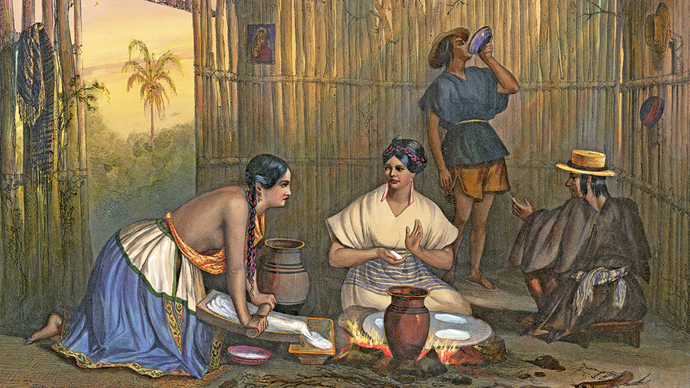

Welcome to our website!
Here, you will dive into the fascinating world of tacos, exploring the rich history of their various styles, both in Mexico and around the globe. Discover the importance of culinary culture in our country while finding recommendations for unique places to try new and delicious taco options in different locations.
Rank them!
You also have the opportunity to rate and share your opinions about tacos, restaurants, and those special spots where you can savor this beloved dish.
Feeling adventurous?
We provide recipes for the most iconic tacos from around the world so you can cook them at home with your own hands.
Begin your journey Through Taco History
From ancient Aztec roots to modern taco innovations, uncover the rich heritage
and worldwide influence that make tacos a beloved culinary treasure.
 Continue